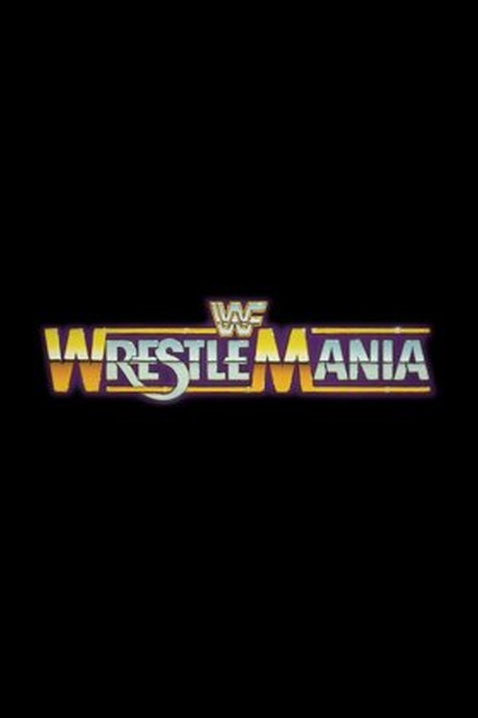

BY CHANNEL
Every channel's full lineup — the shows that call it home.
 CH 1
CH 1The Silver Screen
Classics from the black & white eratonight →
CH 1
The Silver Screen
Classics from the black & white era

The Dick Van Dyke Show
1961 · 159 episodes · TV-PG

The Munsters
1964 · 73 episodes · TV-PG

The Twilight Zone
1959 · 156 episodes · TV-14
 CH 3
CH 3MachoVision
Wrestling legends, all match longtonight →
CH 3
MachoVision
Wrestling legends, all match long

Macho Man the Randy Savage Story
· 15 episodes

WrestleMania
· 2 episodes
 CH 4
CH 4Taba TV
Tabitha's hand-picked favoritestonight →
CH 4
Taba TV
Tabitha's hand-picked favorites

Beverly Hills, 90210
1990 · 277 episodes · TV-14

The Fresh Prince of Bel-Air
1990 · 146 episodes · TV-PG

Jem and the Holograms
1985 · 39 episodes · TV-Y7

Muppet Babies
1984 · 107 episodes · TV-Y

The Wonder Years
1988 · 116 episodes · TV-PG
 CH 5
CH 5The Fifth Dimension
Sci-fi & strange talestonight →
CH 5
The Fifth Dimension
Sci-fi & strange tales

Are You Afraid of the Dark?
1992 · 91 episodes · TV-Y7

Quantum Leap
1989 · 96 episodes · TV-PG

Tales from the Crypt
1989 · 92 episodes · TV-MA
The Twilight Zone
1959 · 156 episodes · TV-14
 CH 6
CH 6Saturday Morning
Cartoons & cereal energytonight →
CH 6
Saturday Morning
Cartoons & cereal energy

He-Man and the Masters of the Universe
1983 · 130 episodes · TV-Y7
Jem and the Holograms
1985 · 39 episodes · TV-Y7
Muppet Babies
1984 · 107 episodes · TV-Y

Pee-wee's Playhouse
1986 · 48 episodes · TV-PG

Power Rangers
1993 · 145 episodes · TV-Y7

Teenage Mutant Ninja Turtles
1987 · 192 episodes · TV-Y7

Tom and Jerry: The Golden Era Anthology (1940–1967)
1940 · 114 episodes · Not Rated
 CH 8
CH 8TGIF (Fridays)
Feel-good sitcoms, Fridays 6 PM to midnighttonight →
CH 8
TGIF (Fridays)
Feel-good sitcoms, Fridays 6 PM to midnight

The Goldbergs (2013)
2013 · 71 episodes · TV-14

Raising Hope
2010 · 44 episodes · TV-14

Schitt's Creek
2015 · 80 episodes · TV-14
 CH 20
CH 20Y2K
Hits of the 2000s & beyondtonight →
CH 20
Y2K
Hits of the 2000s & beyond
The Goldbergs (2013)
2013 · 71 episodes · TV-14
Raising Hope
2010 · 44 episodes · TV-14
Schitt's Creek
2015 · 80 episodes · TV-14
 CH 43
CH 43Drama Queen
Prestige drama & big feelingstonight →
CH 43
Drama Queen
Prestige drama & big feelings

Gilmore Girls
2000 · 34 episodes · TV-14

Highway to Heaven
1984 · 111 episodes · TV-PG

Sex and the City
1998 · 95 episodes · TV-MA
 CH 45
CH 45The Jukebox
Music, musicals & concertstonight →
CH 45
The Jukebox
Music, musicals & concerts

Glee
2009 · 44 episodes · TV-PG
 CH 50
CH 50Clue TV
Mysteries, true crime & detectivetonight →
CH 50
Clue TV
Mysteries, true crime & detective

Dragnet (1951)
1951 · 56 episodes · TV-PG

Unsolved Mysteries
1987 · 228 episodes · TV-PG
 CH 55
CH 55LOL
Sitcom comedy, around the clocktonight →
CH 55
LOL
Sitcom comedy, around the clock

ALF
1986 · 76 episodes · TV-G

The Beverly Hillbillies
1962 · 55 episodes · TV-G

The Brady Bunch
1969 · 25 episodes · TV-G
The Dick Van Dyke Show
1961 · 159 episodes · TV-PG
The Fresh Prince of Bel-Air
1990 · 146 episodes · TV-PG

Gilligan's Island
1964 · 100 episodes · TV-G
The Goldbergs (2013)
2013 · 71 episodes · TV-14

Happy Days
1974 · 39 episodes · TV-G

King of the Hill
1997 · 19 episodes · TV-14

Married... with Children
1987 · 89 episodes · TV-PG
Raising Hope
2010 · 44 episodes · TV-14

Sanford and Son
1972 · 134 episodes · TV-PG

Saved by the Bell
1989 · 78 episodes · TV-G
Schitt's Creek
2015 · 80 episodes · TV-14

That '70s Show
1998 · 200 episodes · TV-PG
 CH 60
CH 60The 60s
The swingin' sixties & mod classicstonight →
CH 60
The 60s
The swingin' sixties & mod classics

Batman (1966)
1966 · 120 episodes · TV-G
The Beverly Hillbillies
1962 · 55 episodes · TV-G
Gilligan's Island
1964 · 100 episodes · TV-G
The Munsters
1964 · 73 episodes · TV-PG
 CH 63
CH 63Mayberry TV
All Andy Griffith, all day in Mayberrytonight →
CH 63
Mayberry TV
All Andy Griffith, all day in Mayberry

The Andy Griffith Show
1960 · 199 episodes · TV-G
 CH 68
CH 68Arnold Avenue
All Wonder Years — growing up on Arnold Avetonight →
CH 68
Arnold Avenue
All Wonder Years — growing up on Arnold Ave
The Wonder Years
1988 · 116 episodes · TV-PG
 CH 70
CH 70Groovy TV
The far-out 60s & 70stonight →
CH 70
Groovy TV
The far-out 60s & 70s
The Brady Bunch
1969 · 25 episodes · TV-G
Happy Days
1974 · 39 episodes · TV-G
Sanford and Son
1972 · 134 episodes · TV-PG
That '70s Show
1998 · 200 episodes · TV-PG
 CH 75
CH 75Late Nite
Sketch comedy after hourstonight →
CH 75
Late Nite
Sketch comedy after hours

In Living Color
1990 · 66 episodes · TV-14
King of the Hill
1997 · 19 episodes · TV-14

Robot Chicken
2005 · 110 episodes · TV-MA

Saturday Night Live
1975 · 24 episodes · TV-14
 CH 80
CH 80I ♥ 80s
80s favorites, neon includedtonight →
CH 80
I ♥ 80s
80s favorites, neon included
ALF
1986 · 76 episodes · TV-G
The Goldbergs (2013)
2013 · 71 episodes · TV-14
Highway to Heaven
1984 · 111 episodes · TV-PG
Jem and the Holograms
1985 · 39 episodes · TV-Y7
 CH 90
CH 90The Peach Pit
All 90210, all the timetonight →
CH 90
The Peach Pit
All 90210, all the time
Beverly Hills, 90210
1990 · 277 episodes · TV-14
 CH 95
CH 95Prime Time
The 90s blocktonight →
CH 95
Prime Time
The 90s block

Freaks and Geeks
1999 · 18 episodes · TV-14
Married... with Children
1987 · 89 episodes · TV-PG
Saved by the Bell
1989 · 78 episodes · TV-G
Sex and the City
1998 · 95 episodes · TV-MA
That '70s Show
1998 · 200 episodes · TV-PG
 CH 100
CH 100Kaboom
Superheroes — capes, cowls & comic-book KAPOWtonight →
CH 100
Kaboom
Superheroes — capes, cowls & comic-book KAPOW
Batman (1966)
1966 · 120 episodes · TV-G

Batman Beyond
1999 · 53 episodes · TV-Y7

Batman: The Animated Series
1992 · 34 episodes · TV-PG
He-Man and the Masters of the Universe
1983 · 130 episodes · TV-Y7
Power Rangers
1993 · 145 episodes · TV-Y7
 CH 111
CH 111Savage at Nite
Retro sitcoms, all nite longtonight →
CH 111
Savage at Nite
Retro sitcoms, all nite long
ALF
1986 · 76 episodes · TV-G
The Beverly Hillbillies
1962 · 55 episodes · TV-G
The Dick Van Dyke Show
1961 · 159 episodes · TV-PG
Gilligan's Island
1964 · 100 episodes · TV-G
The Goldbergs (2013)
2013 · 71 episodes · TV-14
The Munsters
1964 · 73 episodes · TV-PG
 CH 215
CH 215Bel-Air
All Fresh Prince, born and raisedtonight →
CH 215
Bel-Air
All Fresh Prince, born and raised
The Fresh Prince of Bel-Air
1990 · 146 episodes · TV-PG